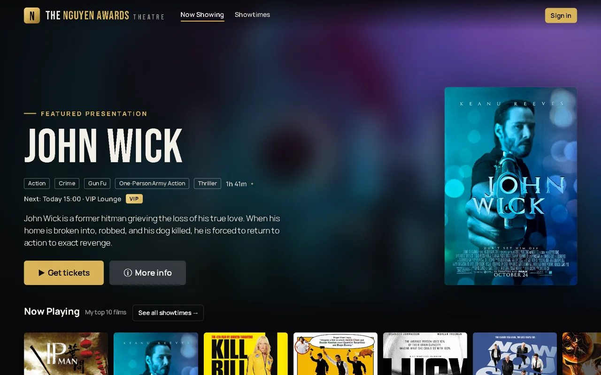
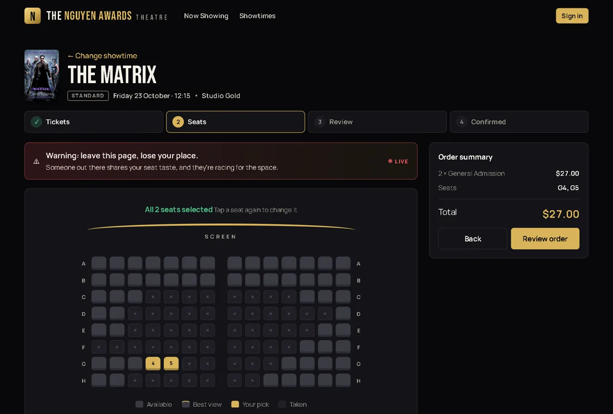

It started as a classic backend exercise: build a movie reservation API. I kept going until it felt like a real theatre, with Cineplex-style booking, a live seat map and QR ticket passes. It's also where I keep my own movie reviews, one per film, rated out of 10.

How booking works
Pick a film, a date and a time, then four steps: Tickets → Seats → Review → Confirmed.
- Three formats: Standard, 4DX and VIP (19+, so no child tickets)
- General Admission, Child ($4 less) and Senior ($3 less)
- Snack combos, priced by the server so nobody can edit the price in their browser
- Showtimes only between noon and midnight, and never overlapping in the same hall
- A QR ticket pass when you're done

The hard part: two people, one seat
The classic booking bug: two people click the same seat at the same moment, the app checks both requests, sees the seat is free both times, and sells it twice.
Checking in the app code isn't enough, because both checks can pass before either booking saves. So the rule lives in the database: a unique index that allows only one active booking per seat per showtime. If two bookings arrive at once, the database accepts one and refuses the other, every time. The loser gets a clear message listing which seats were taken.
The seat page also re-checks the map every 6 seconds. If someone grabs a seat while you're looking, it flashes, any of your picks they got first are released, and the page suggests other showtimes with good seats left.
Making a demo feel alive
An empty theatre makes a dull demo, so I built a demand simulator. It fills each show to a realistic level, then adds a new party every 12 seconds or so. Evenings, weekends and premium formats fill up faster, and center seats a little past the middle row go first.
Simulated bookings are clearly labelled in the admin screens and switch off with one setting. A shared demo account lets visitors try booking, and its bookings are cleared every night. The last reset date is saved in the database, so a restart never resets twice, and a server that slept through the night catches up when it wakes.
Getting the details right
- Prices never change after the fact. Each showtime stores its full ticket price, so changing a format's surcharge never reprices tickets already on sale.
- Money is stored in cents, so totals never pick up rounding errors.
- The database upgrades itself. Schema changes are numbered migrations that run on startup.
- Admins get real reports: occupancy, seats sold and revenue by showtime, film and format.
Security
Before making the code public I scanned its history for secrets and tightened things up. The server refuses to start with the example secret key, public sign-up is off unless switched on, and strict security headers help block common browser attacks. Customers and admins have separate roles, and only admins can change films, showtimes or reports.
What's next
Hosting it on a server with a persistent disk so you can try it live, then a door scanner that checks QR tickets at the entrance.
Need something built?
I build web apps and AI tools for small businesses. If your business takes bookings, this is the kind of problem I like solving.
Let's talk